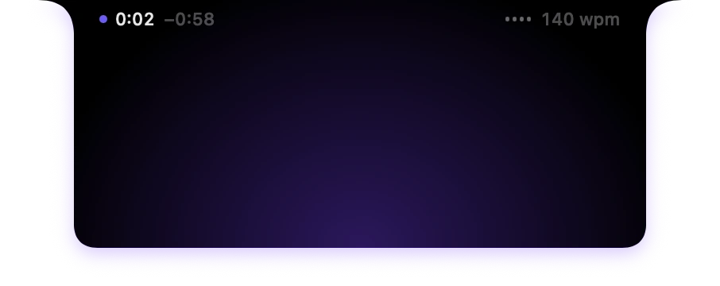
Eyes on the lens.Words on cue.
Souffleur is a free, open source teleprompter for the Mac. Your script rolls right under your camera while you speak, and stops the moment you do.
Invisible in your screen recordings.
Free · Version 1.2 · macOS 14 or later
See itin action
Press play and talk. The script rolls at your speed, waits the moment you pause, and picks up as soon as you speak again.
Or let it follow your words one by one: the words you have said dim, the next one lights up, and the line you are on stays under the lens.
Invisible when you record.
Screenshots, screen recordings and screen sharing all leave Souffleur out.
Your audience sees your slides, your demo and your face. Never your script.
- Video calls
- Tutorials
- Product demos
- Talks
Checked on macOS 26.5 with the Mac's own screenshots and recordings and with ScreenCaptureKit, which screen recorders and meeting apps use. A display that mirrors your screen, or a camera filming it, still shows it.
A telepromptermade for the Mac
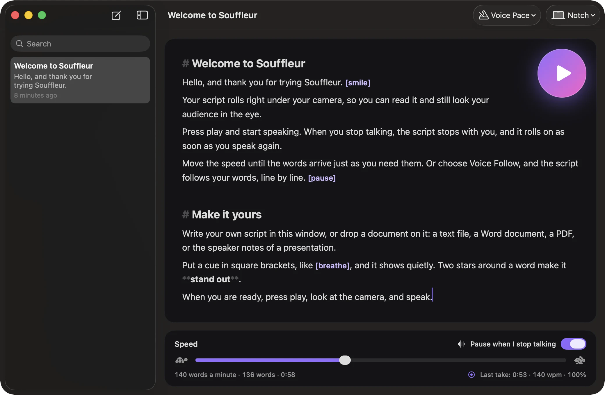
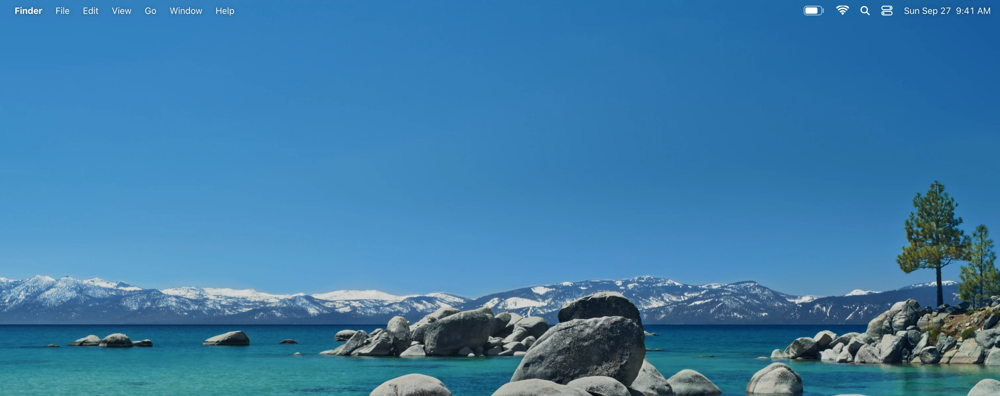
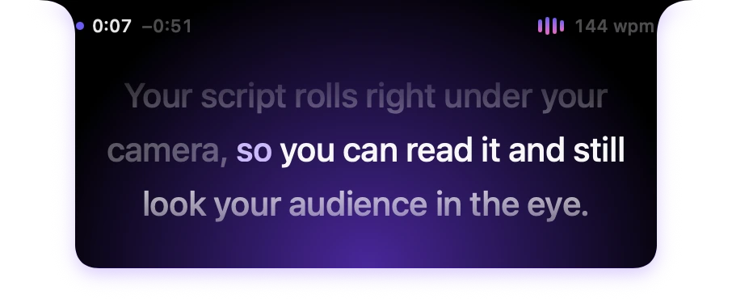
Write or drop your script, pick a speed, press play. Then just talk.
Smooth scrolling at any speed, a clean black prompter, and nothing else on the way. Built for macOS 14 Sonoma and later, on Apple silicon and Intel.
And thensome more.
Everything a notch prompter does, then what the others leave out.
-
Five stage lights
Violet, ocean, ember, mint or gold, the light inside the notch is yours. Or turn it off.
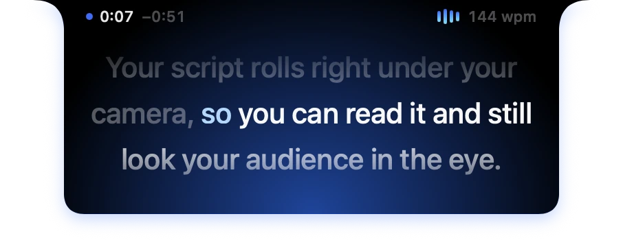
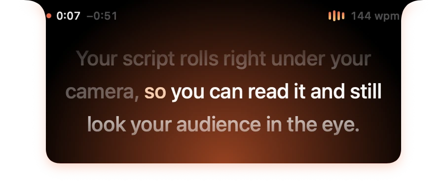
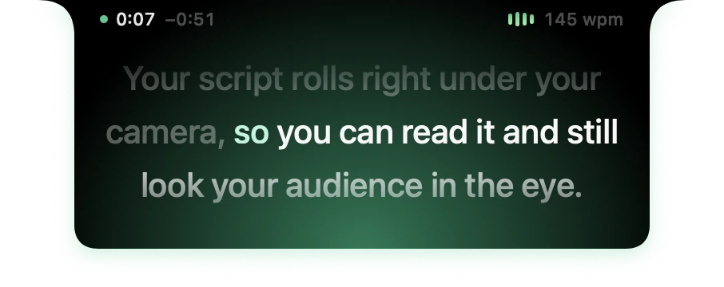
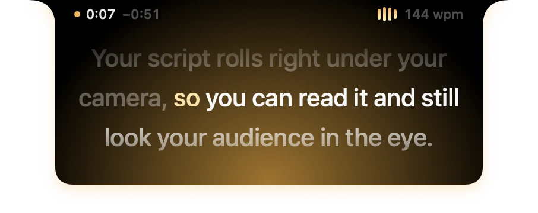
-
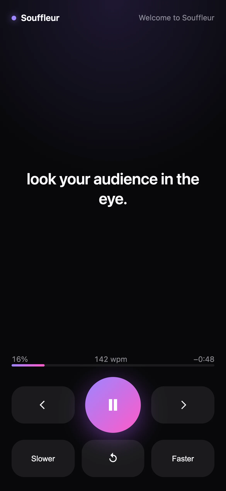
A remote in your phone
Scan a code and your phone plays, pauses and sets the pace, over your own network.
-
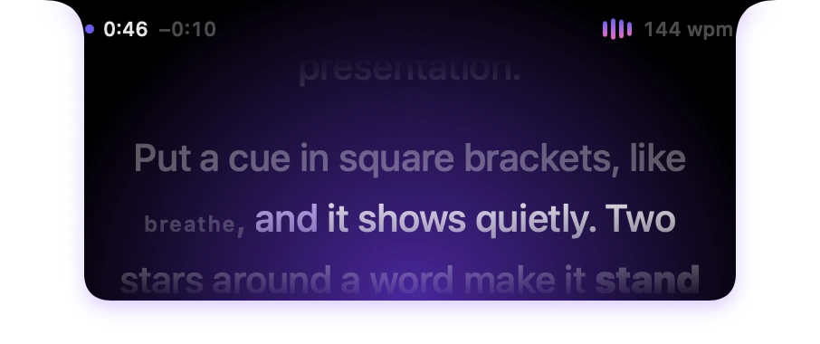
A coach after each take
Your pace live beside the camera, then your time, pace and how much you covered.
-
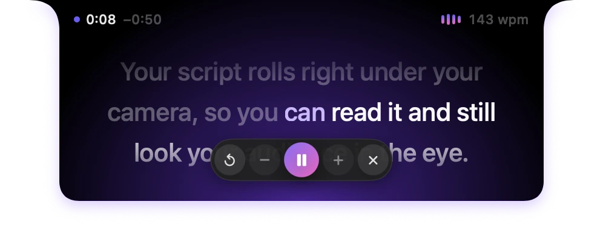
Hands free
Global shortcuts, presentation clickers and foot pedals,
souffleur://links and Shortcuts actions. -
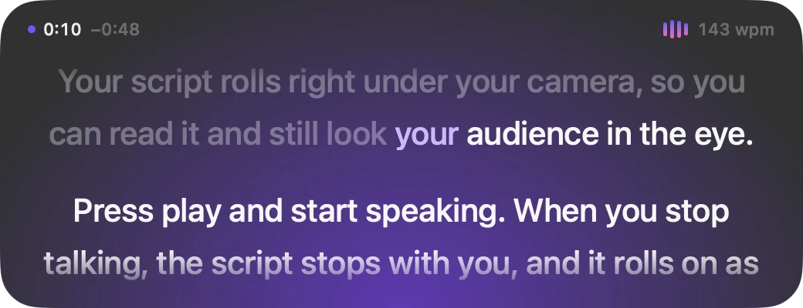
Anywhere on screen
In the notch, floating in glass, or full screen and mirrored for a teleprompter rig.
-
Any script
Plain Markdown files you own, and import from Word, PDF and the speaker notes of a presentation.
-
Fits any length
One click sets the speed so your script lasts exactly 30 seconds, a minute or two: made for shorts and pitches. After a take, keep your own pace for the next one.
Free.Open source.
No price, no trial, no subscription. The whole app is on GitHub.
- Every feature included
- Updates itself, for free
- No account, no tracking
- MIT license
Signed and notarized by Apple · Or with Homebrew: brew install --cask ruben4reall/tap/souffleur
Builtin the open
A bug, an idea, a question? Open an issue or a discussion. Every line of Souffleur is public, and pull requests are welcome.
github.com/ruben4reall/souffleurBytes of your voice that leave your Mac
0
Speech is heard on your Mac. Nothing is recorded, nothing is sent.
FAQ
Is Souffleur really free?
Yes. No price, no trial, no account and no subscription. Souffleur is open source under the MIT license, and every update is free.
Will people see my script when I record or share my screen?
No. The prompter asks macOS to leave it out of screenshots, screen recordings and screen sharing, and macOS does: we checked it on macOS 26.5 with the Mac's own screenshots and recordings and with ScreenCaptureKit, which screen recorders and meeting apps are built on.
What no app can hide it from: a display that mirrors your screen, or a camera filming it. To show the prompter in a tutorial, turn this off in Settings.
How does it know when I stop talking?
It listens to how loud the room is and how loud you are, on your Mac, and rolls only while you speak. It works in any language, and nothing is recorded or sent anywhere.
Voice Follow goes further and recognises your words, also on your Mac, to keep your exact place in the script.
Does it get along with Islet and other notch apps?
Yes. Souffleur hangs just below the notch and never covers the menu bar, so what Islet, NotchNook or boring.notch show beside the camera stays where it is. While you read, the prompter stays in front of their expanded views, and they come back the moment it closes.
Apps that want to step aside while you read can listen for the two notices Souffleur posts when the prompter opens and closes.
Which Macs does it work on?
Any Mac with macOS 14 Sonoma or later, Apple silicon or Intel. On a MacBook with a notch the prompter hangs from it; on any other screen it hangs from the menu bar, floats wherever you put it, or fills a display.
How do I install it?
Download the disk image, open it and drag Souffleur to Applications. Or run brew install --cask ruben4reall/tap/souffleur. Souffleur is signed and notarized by Apple, and updates itself.
Can I control it without touching my Mac?
Yes: global keyboard shortcuts, presentation clickers and foot pedals, a remote in your phone over your own network, souffleur:// links and Shortcuts actions.